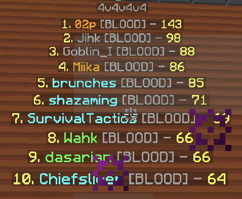

About
Origins
The Bloodlust was created by a group of close friends, originally starting out as a bedwars-only private guild. We had a minimum stats requirement, but also wanted to create a sense of community, any potential players had to get along well with current members. From day one we made sure to make this guild something special, asserting our dominance firstly in Bedwars.

As time went on, and the guild started filling up, we started taking part in Guild vs Guild events, competing in certain game-modes such as Skywars, BSG, Duels, and of course Bedwars, in order to test our prowess against larger, more well-known guilds. We found ourselves to be winning most modes that we took part in, consistently, and so made the decision to branch the guild out to players who specialized multiple game-modes, or at least in games other than Bedwars.
The Transfer
When the guild update was released, the guild immediately started grinding for a high leaderboard spot in the major game modes on Hypixel. We quickly achieved position #1 on overall wins due to this, as well as top 10 on the leaderboards in most game-modes. However, we knew we would never be able to grind for #1 guild xp position, or even top 10 for that matter, due to the simple fact that all the legacy guilds were so far ahead in guild experience.
Altitude's Legacy
This is why we decided to take the opportunity, given to us by Palomer, bugfroggy and DenverMC (the original owners of the Altitude Guild), to move all our players over to his guild, which was #7 in terms of legacy rank and guild xp. This new and exciting move has now given us something to grind towards, the #1 guild xp spot. To this day, we recruit active players with exceptional stats in any game-mode on the network, who can contribute something unique to the guild. If you are interested in a more detailed explanation of the Guild Transfer check out this thread:
Going Forward
After so much history, and now being the #1 guild in terms of overall stats, we would like to still go further and focus on establishing our legacy as the best of all time. With even higher focus on recruiting the best, most active around, grinding positions on all leaderboards, we will still remain committed to having no GEXP requirements, while also staying true to our roots by remaining not just a group of friends, but a family.